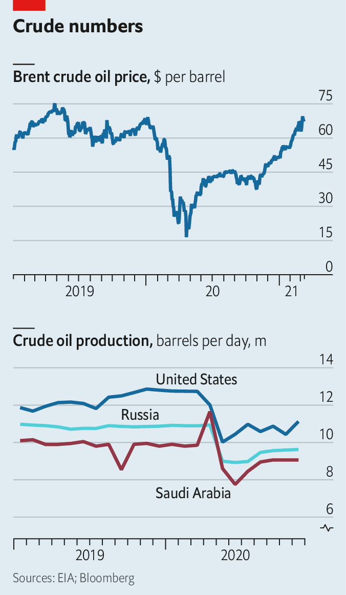
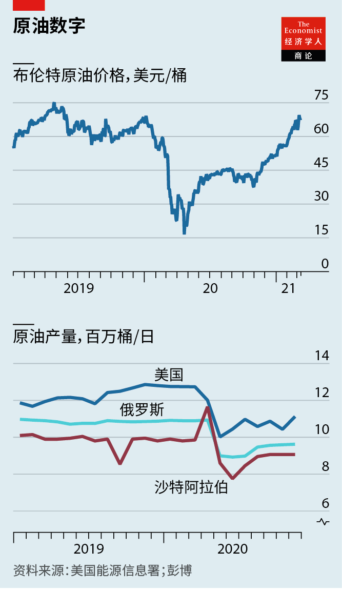

2021-03-24T14:49:20+00:00
Oil prices
油价
油價
High and tight
看涨，吃紧
看漲，吃緊
Oil markets prepare for lofty prices and restrained supply
石油市场准备迎接油价高企和供应受限
石油市場準備迎接油價高企和供應受限
WHAT A DIFFERENCE a year makes. On March 6th 2020 Saudi Arabia and Russia failed to agree on a deal to restrain production. A price war ensued, with the two giants unleashing millions of barrels of crude just as covid-19 prompted lockdowns and demand dried up. Now Saudi Arabia and other producers are curbing output as demand rises. The price of Brent crude, the international benchmark, briefly climbed above $70 a barrel on March 8th for the first time since May 2019. It dipped a little thereafter, to $68 on March 10th.
一年的光景，竟有如此大的不同。2020年3月6日，沙特阿拉伯和俄罗斯未能就一项限产协议达成一致。一场价格战随后爆发，这两大巨头释放了成百上千万桶原油，而当时新冠肺炎正迫使各地实施封锁，需求也随之枯竭。而现在，需求上升之际，沙特和其他产油国正在抑制产量。3月8日，国际基准布伦特原油价格短暂攀升至每桶70美元以上，为2019年5月以来首次。此后稍有下跌，3月10日降至每桶68美元。
一年的光景，竟有如此大的不同。2020年3月6日，沙特阿拉伯和俄羅斯未能就一項限產協議達成一致。一場價格戰隨後爆發，這兩大巨頭釋放了成百上千萬桶原油，而當時新冠肺炎正迫使各地實施封鎖，需求也隨之枯竭。而現在，需求上升之際，沙特和其他產油國正在抑制產量。3月8日，國際基準布倫特原油價格短暫攀升至每桶70美元以上，為2019年5月以來首次。此後稍有下跌，3月10日降至每桶68美元。
The surge comes amid a broader boom for commodities from copper to corn, as Chinese imports rise and supply remains constrained. But oil’s climb has been particularly vertiginous. In April last year the price of Brent dipped below $20 a barrel and one American futures contract briefly became less than worthless. Since late October, however, Brent’s value has risen by nearly 100%. By the third quarter, analysts at Goldman Sachs, a bank, reckon it could reach $80.
油价飙升之际，从铜到玉米的大宗商品经历了一轮广泛的繁荣，原因是中国进口增加而供应仍然受限。但是石油价格的攀升尤其令人晕眩。去年4月，布伦特原油价格跌破每桶20美元，一份美国原油期货合约一度变得一文不值。然而自10月下旬以来，布伦特原油价格上涨了近100%。高盛的分析师预计今年第三季度油价可能会达到每桶80美元。
油價飆升之際，從銅到玉米的大宗商品經歷了一輪廣泛的繁榮，原因是中國進口增加而供應仍然受限。但是石油價格的攀升尤其令人暈眩。去年4月，布倫特原油價格跌破每桶20美元，一份美國原油期貨合約一度變得一文不值。然而自10月下旬以來，布倫特原油價格上漲了近100%。高盛的分析師預計今年第三季度油價可能會達到每桶80美元。
Three successive events have helped jolt oil prices upwards this month. On March 4th the Organisation of the Petroleum Exporting Countries (OPEC) and its allies surprised the market by agreeing to extend production cuts to April. Then, on March 6th, America’s Senate passed a $1.9trn stimulus bill, which should boost economic activity in the country that remains the world’s most voracious consumer of oil. Fears of supply disruption have raised prices further. On March 7th Houthis (Shia rebels fighting the Saudi-backed government in neighbouring Yemen) tried to attack Saudi Arabia’s Ras Tanura, home to three giant oil-export terminals and a refinery that supplies a quarter of the kingdom’s fuel.
本月，接连发生的三起事件助推油价上行。3月4日，石油输出国组织（欧佩克）及其盟友同意将减产延长至4月，出乎市场意料。之后在3月6日，美国参议院通过了一项1.9万亿美元的刺激法案，应该会促进该国的经济活动，而美国仍旧是世界上胃口最大的石油消费国。对供应中断的担忧进一步推高了价格。3月7日，胡塞武装（沙特的邻国也门的什叶派叛军，与受沙特支持的也门政府作战）试图袭击沙特的拉斯坦努拉（Ras Tanura），那里有三个巨大的石油出口码头，还有一座供应了沙特四分之一燃料的炼油厂。
本月，接連發生的三起事件助推油價上行。3月4日，石油輸出國組織（歐佩克）及其盟友同意將減產延長至4月，出乎市場意料。之後在3月6日，美國參議院通過了一項1.9萬億美元的刺激法案，應該會促進該國的經濟活動，而美國仍舊是世界上胃口最大的石油消費國。對供應中斷的擔憂進一步推高了價格。3月7日，胡塞武裝（沙特的鄰國也門的什葉派叛軍，與受沙特支持的也門政府作戰）試圖襲擊沙特的拉斯坦努拉（Ras Tanura），那裡有三個巨大的石油出口碼頭，還有一座供應了沙特四分之一燃料的煉油廠。
There was no damage to Ras Tanura, but the attack was the most significant since September 2019, when strikes briefly knocked out half of Saudi production. The latest attempt has rattled markets already anxious about America’s recent air strikes in Syria. In addition to the higher risk of disruptions to Saudi output, it looks less likely that America will quickly lift sanctions on Iran, a giant crude producer whose exports have been reduced to a trickle, smuggled out on ships with transponders switched off to evade detection.
拉斯坦努拉没有受损，但这次攻击是自2019年9月以来最严重的一次，当时的袭击一度导致沙特产油量减半。市场本就已经在为美国近期对叙利亚发动的空袭而忧虑，最近的这起企图袭击更是令市场紧张不已。除却沙特生产中断的风险增加这一点，看起来美国迅速解除对伊朗制裁的可能性也降低了。伊朗是原油生产大国，其出口已经减少成涓涓细流，靠关闭了应答器以逃避检测的船只走私出去。
拉斯坦努拉沒有受損，但這次攻擊是自2019年9月以來最嚴重的一次，當時的襲擊一度導致沙特產油量減半。市場本就已經在為美國近期對敘利亞發動的空襲而憂慮，最近的這起企圖襲擊更是令市場緊張不已。除卻沙特生產中斷的風險增加這一點，看起來美國迅速解除對伊朗制裁的可能性也降低了。伊朗是原油生產大國，其出口已經減少成涓涓細流，靠關閉了應答器以逃避檢測的船隻走私出去。
After the attacks in 2019 oil prices climbed briefly, note analysts at the Royal Bank of Canada, before subsiding amid confidence in ample supply. The market now looks much tighter. “‘Drill, baby, drill’ is gone for ever,” Abdulaziz bin Salman, Saudi Arabia’s energy minister, declared this month, referring to America’s shale industry. Texan oilmen may bristle at such a taunt, but investors will continue to rein in their capital spending. America may not reach its pre-pandemic levels of production until late 2023, reckons Rystad Energy, a research firm.
加拿大皇家银行（Royal Bank of Canada）的分析师指出，2019年的袭击发生后，油价短暂攀升，随后在市场对供应充足的信心中回落。现在市场供应看起来要紧张得多。沙特能源部长阿卜杜勒阿齐兹·本·萨尔曼（Abdulaziz bin Salman）本月在提到美国页岩油产业时称，“‘钻啊，宝贝，钻吧’的日子一去不复返了。”这样的嘲讽可能会让得州的石油商们火冒三丈，但投资者还是会继续抑制住自己的资本支出。研究公司睿咨得能源（Rystad Energy）认为，美国的石油产量可能要到2023年底才能回到疫情前水平。
加拿大皇家銀行（Royal Bank of Canada）的分析師指出，2019年的襲擊發生後，油價短暫攀升，隨後在市場對供應充足的信心中回落。現在市場供應看起來要緊張得多。沙特能源部長阿卜杜勒阿齊茲·本·薩爾曼（Abdulaziz bin Salman）本月在提到美國頁岩油產業時稱，“‘鑽啊，寶貝，鑽吧’的日子一去不復返了。”這樣的嘲諷可能會讓得州的石油商們火冒三丈，但投資者還是會繼續抑制住自己的資本支出。研究公司睿咨得能源（Rystad Energy）認為，美國的石油產量可能要到2023年底才能回到疫情前水平。
For now, OPEC and its allies look similarly restrained. Prince Abdulaziz remains particularly wary of raising production too soon. In addition to brokering the broader deal with OPEC and its allies, Saudi Arabia said it would extend its additional cut of 1m barrels a day through to April. Russia is slightly less cautious—it will increase output by a modest 130,000 barrels a day—but it has a new reason to keep prices up. Higher social spending means that the country now requires an oil price of $64 a barrel to balance its budget, up from an average of $51 in 2018 and 2019, estimates S&P Global Platts, a data firm.
就目前而言，欧佩克及其盟友看起来同样克制。阿卜杜勒阿齐兹亲王对过快增产仍旧格外谨慎。除了与欧佩克及其盟友达成更广泛的协议，沙特还表示将把每日额外减产100万桶的措施延长至4月。俄罗斯略微放松些——它将把日产量小幅增加13万桶。但它现在又多了一个保持价格上涨的新理由。数据公司标普全球普氏（S&P Global Platts）估计，由于社会支出的增加，俄罗斯现在需要油价达到每桶64美元才能平衡预算，高于2018年和2019年的平均51美元。
就目前而言，歐佩克及其盟友看起來同樣克制。阿卜杜勒阿齊茲親王對過快增產仍舊格外謹慎。除了與歐佩克及其盟友達成更廣泛的協議，沙特還表示將把每日額外減產100萬桶的措施延長至4月。俄羅斯略微放鬆些——它將把日產量小幅增加13萬桶。但它現在又多了一個保持價格上漲的新理由。數據公司標普全球普氏（S&P Global Platts）估計，由於社會支出的增加，俄羅斯現在需要油價達到每桶64美元才能平衡預算，高於2018年和2019年的平均51美元。
For petrostates, there is a risk in keeping supply too tight. They want prices to remain high enough to balance their budgets, but not so high that they trip up the recovery in demand. The distribution of vaccines has hardly been smooth (though there are signs of progress: on March 4th more than 2.6m doses were administered in America). India’s oil minister, Dharmendra Pradhan, has asked OPEC and its allies to boost supply to lower prices and support the country’s economic recovery, a plea that has so far won little sympathy. The oil cartel meets again on April 1st. ■
对石油国家来说，保持供应过于紧张有其风险。它们希望价格能保持在足够高的水平以平衡预算，但又不能高到阻碍需求复苏。疫苗的分发难说顺利（不过有改善的迹象：3月4日当天美国注射了逾260万剂疫苗）。印度石油部长达曼德拉·普拉丹（Dharmendra Pradhan）请求欧佩克及其盟友增加供应以降低油价，支持该国的经济复苏，但目前为止这一请求并没赢得多少同情。欧佩克成员将于4月1日再度坐到会议桌前。
對石油國家來說，保持供應過於緊張有其風險。它們希望價格能保持在足夠高的水平以平衡預算，但又不能高到阻礙需求復蘇。疫苗的分發難說順利（不過有改善的跡象：3月4日當天美國注射了逾260萬劑疫苗）。印度石油部長達曼德拉·普拉丹（Dharmendra Pradhan）請求歐佩克及其盟友增加供應以降低油價，支持該國的經濟復蘇，但目前為止這一請求並沒贏得多少同情。歐佩克成員將於4月1日再度坐到會議桌前。